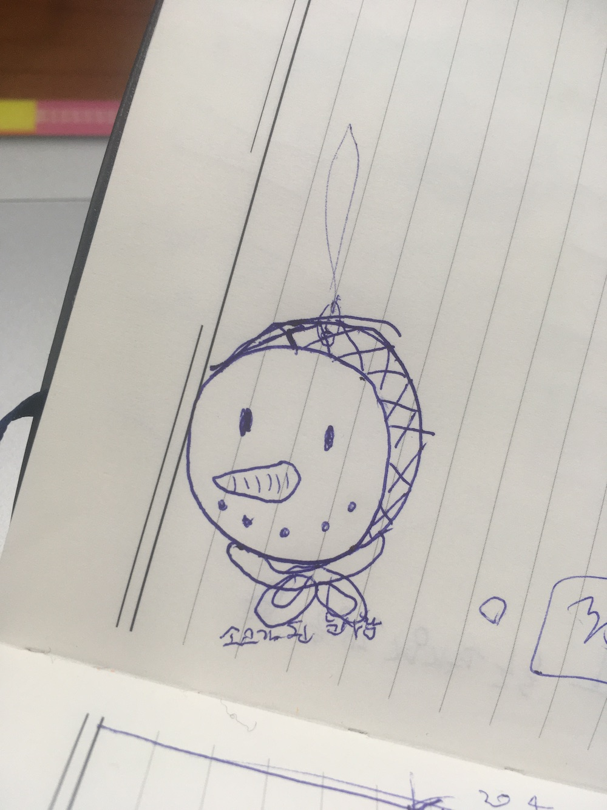
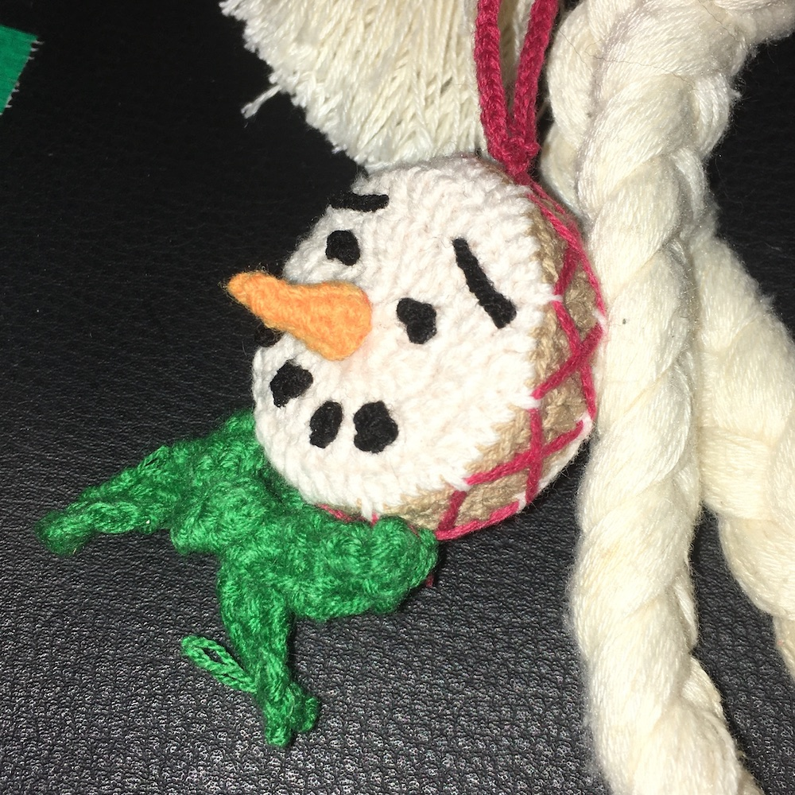

만들게 된 동기를 소개해보겠다. 이것에 대해 말하려면.. 어디서부터 말을 해야 하냐면.. 이 글을 누가 읽을까부터 고민해야 하는데.. 엄마한테 쓴다고 상정하고 써볼까요~
올해 9월부터 12월까지 일상굿프로젝트로 소고춤을 배웠다. 소고춤이 뭔지 머릿속에 안그려지는 사람이 일단 있겠지? 2021년의 나라면 소고라는 말을 들으면 세븐틴의 도겸을 떠올렸겠지? 초등학생 때 털래털래 들고 다니던 태극 무늬를 품은 손잡이가 달린 작은 소고를 얄궂은 스텝으로 울리다가, 2022년 캐럿랜드(세븐틴 팬미팅)에 소고 굿즈를 만드는 뇌절로 이어진 그때 그 기억이 다였겠지?
그러나.. 2024년의 나는 손잡이가 없는 두터운 소고를 당근에서 2만원을 주고 상계동 끝자락에 가서 사기까지 하는 그런 사람이 되어 버린 것이다. 쓰고 보니 진짜 이게 뭐노, 이런 기분이다. 나는 “내 소고”가 있는 사람이 되어버렸고, 최근 내 삶의 궤도는 대체로 이런 식이다.
소고가된눈사람 이야기를 해야 하는데 소고 왜 배우게 됐는지 이야기를 하려다 보니까 또 말이 길어진다.. 엄마가 읽는 기분을 상상하면서 다시.. 엄마한테는 풍물 같은 거 배워~ 정도로만 말했는데 그래서 가끔 엄마는 전화하면서 할말이 없어지면 아직도 사물놀이 배우러 다니나, 하고 물어본다. 약간 놀리는 것 같다. 어쨌든 그러거나 말거나 나는 늘상 그렇듯 머쓱하게 어어 하고 넘기고..
소고춤을 배워야 겠다는 생각을 한 건, 올해 8월을 지나면서 였던 것 같다. 8월말에는 큰 공연이 있었다. 그렇게 큰 뭔가 였는지 사실 잘 모르겠고 뭔가 스트레스가 있었는지 여전히 되돌아봐도 잘 모르겠는데, 그때쯤에는 막연하게 이것이 뭘까? 라는 생각을 했었다. 초여름부터 사실 이런저런 것들로 꽤 바빴고 그런 상태로 여름을 다 지나고 보니 정말. 이것이 뭘까? 종종 그런 생각을 하게 됐다.
인정해보자면.. 애를 쓰고 있었고, 애를 쓰는 건 특별히 어려운 일도 아니었고, 유난 떨며 애 쓰는 걸 즐기는 편이다. 그런데 여름에 문득.. 애를 다 쓰고 나서 미련 없이 그만 둘 수 있는 사람이 되는 게 내 추구미인데, 오 이러다가 진짜 미련 없이 그만 둘 수 있겠는데, 그런 생각이 들었고 그게 나에게 뭔가 신호처럼 느껴졌다.
그래서 미련을 좀 구질구질하게 남겨보려고 새로운 뭔가를 배워야겠다는 마음이 들었다. 나는 관성적인 걸 좋아하면서도 관성적인 것을 못 견뎌하는 편이기도 한데, 후자의 마음으로 소고춤을 배우기 시작했다. 그리고 무엇이 나를 움직이게 하는지도 확인해볼까 싶기도 했다. 소고춤 배우면서는 재밌었다. 특별히 뭐 대단한 성찰의 시간을 보낸 건 아니었고 재밌다 하면서 배웠다.
말이 진짜 많군.. 그래서 소고가된눈사람이 왜 나왔냐면~ 일상굿프로젝트는 학기가 끝나면 발표회를 하는데, 팀 마다 의상 컨셉이 있고 이번 발표회는 과도한 컨셉을 지양하자고는 했지만, 소고춤 팀은 연말기념 빨강초록 컨셉이었다. 그래서 뭐 코바늘로 뭐든 만들어볼까 마침 빨강초록 실도 있고 그런 고민을 하다가, 스노우맨 캐릭터를 소고로 만들면 재밌겠다 싶었다. 풍물 악기를 코바늘로 떠보고 싶은 마음도 늘 있었다.
스노우맨을 스노우맨처럼 보이게 하는 건, 점으로 된 눈과 입매 그리고 당근 코, 거기에 초록색 머플러를 소고손잡이끈처럼 하면 되겠다 생각을 하고 먼저 스케치를 했고.. 아예 흰색 실도 있긴 했는데 그래도 소고의 느낌을 살리려면 약간 살구빛 색이 좋겠다 싶어서 가죽을 뜨기 시작했다. 적당한 크기의 밑판을 완성하고 나서 갈색 실로 바꾸고 테를 짜 올렸다. 근데 실이 빳빳하지 않다보니 소고의 형태를 잡기가 어려워서 언젠가 대문에 붙어있던 컴퓨터 수리 광고 마그넷(빳빳한 종이+얇은 자석)을 원형으로 잘라서 밑판과 윗판 가죽에 덧대고 솜을 채워서 소고의 형태를 완성했다.
코바늘하면서 제일 귀찮은 건 사실 공예의 영역이다. 인형 같은 걸 뜨면 결국 마지막에 자잘하게 마무리하는 단계가 필요하고 그게 결국 완성도를 결정하는데.. 이 단계가 개인적으로는 제일 귀찮고 하기 싫다. 하지만.. 그래도 해야지.. 테에 소고끈을 둘러줘야 하니까 빨간 색 실로 대충 돗바늘로 둘러주고.. 눈과 입매를 위해 검은 실로 매듭을 지어서 점점점을 만들고 본드로 1차 고정하고 가죽에 붙여줬다. 주황색 실로 당근 코를 대충 만들고 이것도 가죽에 붙여주고.. 초록색 실로 대충 길게 머플러처럼 떠주고 소창끈처럼 묶어서 소고에 바느질.. 그리고 어딘가에 달려면 끈이 필요하니까 이중사슬로 길게 끈을 만들어서 정수리에 달아줬다. 완성!
생각해보니 이정도로 스케치부터 다 만들어본 건 처음이었다. 재밌기도 하고 뿌듯하기도 하고 여러가지로 만족스러운 결과물이다. 하지만 본드 접착력이 별로인지 입매 중 하나가 떨어져서 지금은 수리가 필요한 상태. 하지만 일단 외면하고 있다. 홀리데이 다 지났는데 뭐 어때!!!
그래서.. 소고를 배우게 만든 여름의 고민은 어떻게 됐냐면, 그냥 그 상태로 있는 것 같다. 잘 모르겠군!